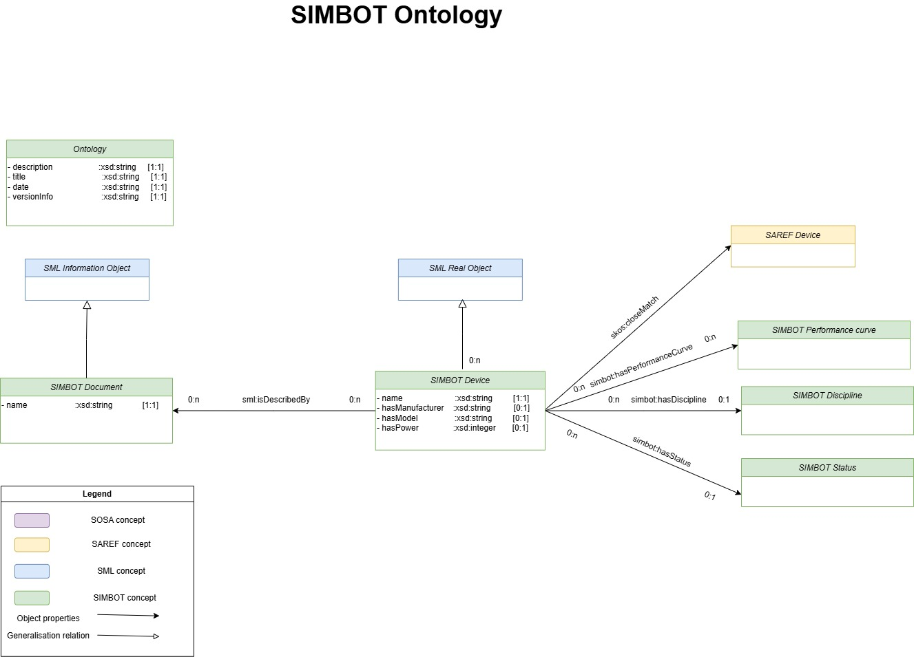
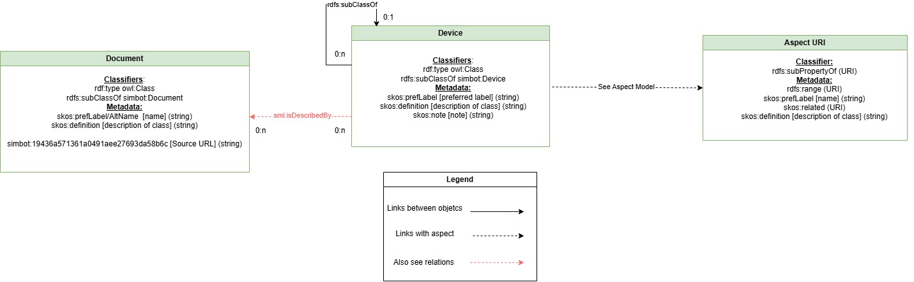
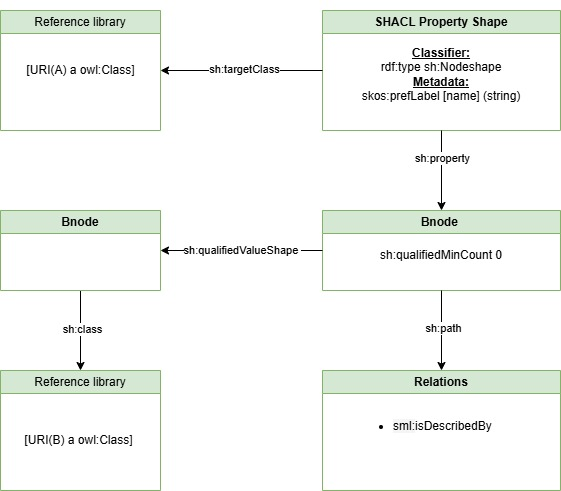
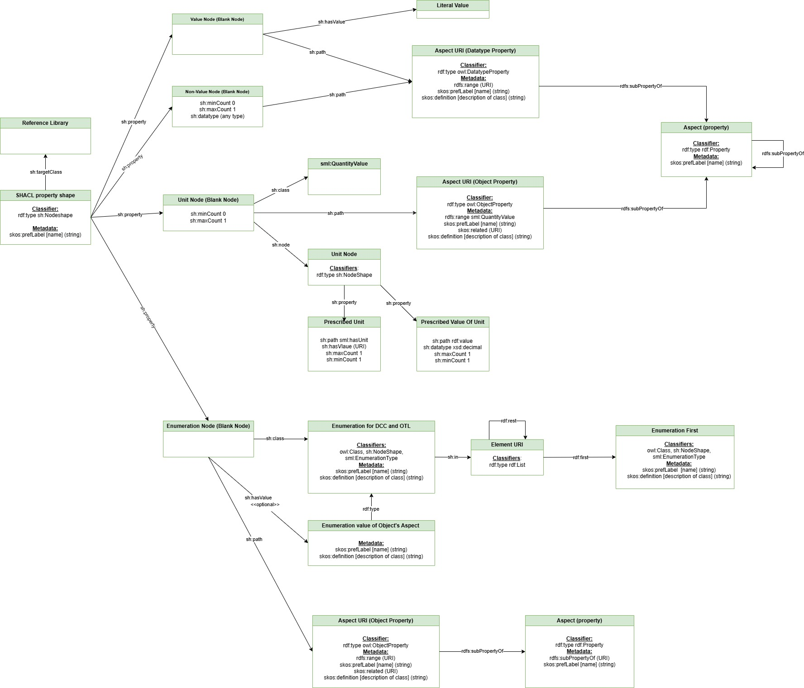

SIMBOT ontology is a semantic model which aims to form a shared model of consensus to enable semantic interoperability between
solutions from different providers and to reduce the cost and time implementation of simulation models.
The ontology adheres to the modelling style described in the CEN EN 17632-1:2022. The CEN EN 17632-1:2022 is a European standard
for data modelling.
Introduction
Scope of application
This document is written as a supplement the Mathematical simulation models for real time, SIMBOTs. The focus of this document is to
give an explanation and guidance on the usage of SIMBOT ontology.
This ontology provides a basis for a common vocabulary for information re-use to reduce the cost and time implementation of simulation models.
Goal
The goal of this document is:
To explain the concepts behind the ontology;
To describe the structure of the ontology;
To describe the structure of the SIMBOT reference library;
This methodology helps to improve the collaboration between manufacturers and software developers, reducing the time and cost of model implementation.
Structure
This document starts out stating the basic concepts and thoughts behind the ontology. After this, an overview of the libraries and the main structure of the ontology is explained.
This is followed by some guidance on different forms of application of the ontology.
Basic concepts
Introduction
The Oxford Living Dictionary defines an ontology as "a set of concepts and categories in a subject area or domain that shows their properties and the relations between them."
BDTA provides a formal ontology , specifying a shared vocabulary, and the constraints included with these concepts.
The reason BDTA is applying an ontology within its information landscape is to help the transfer of information between applications or stakeholders,
to formalise and standardise the vocabulary used to express information and to efficiently reuse information.
The ontology forms a network of information, consisting of concepts and statements about these concepts, that are applicable on mathematical simulations,
and to which the information in a project can refer.
The ontology for example contains information about a hard disk drive that can be used in a datacenter, such as its model,
its manufacturer, and the input and output values of a performance curve that are related to it.
Data Arcitecture
For effective (re)use of simulation knowledge, data is split into several levels. The pyramid in Figure 1 shows, from top to bottom, the different levels that need to be dealt with.
This ontology utilizes Linked Data methodologies (specifically RDF1) to exchange vendor-neutral mathematical models in a semantically rich manner.
To prevent arbitrary modeling patterns, the data structure relies heavily on a foundational core model.
The SIMBOT core ontology provides this foundation. The CEN EN 17632-1:2022, provides such a core model that can
be used as a starting point to classify data. It also offers a set of modelling rules, to ensure that the same unified modelling approach is used.
At the highest level of abstraction, the architecture implements the core principles of CEN EN 17632-1:2022.
The core standard defines the basic very generic types, such as "Real object", "Document" or "Information object".
On top of that, some relations are defined (e.g., a Real object is described by an Information object). If these basic relations do not fully cover the required use cases,
it is possible to extend the core model. For example, in the core ontology of simbot, the class Device was added in order to standardize its functional and performance
properties whcih are necessary such as the model or the performance curves.
The four data levels
The next level defines what needs to be registered: this is called reference data library. This library is still about abstract things, which can not be seen or pointed at
("a server" or "a datasheet"). On top of adding more specific concepts, the refernce library can define the information need for such concepts. For exanple, in this level we might be intrested
in details about the model and the manyfacturer of the devices.
Based on the classes defined in the domain layer, specific equipment instances represent precise market models populated with actual manufacturer specifications.
For example "Server_01 has power 200 Watt". Because we have formally defined the language, structure, and the information need, it is possible to check whether the
simulation data conforms to these definitions. In this example, we could conclude that the wrong unit of measure is used to define the diameter of the duct
(kilowatt instead of watt).
Form and Formalism
The ontology is expressed in linked data, which can be queried using the SPARQL query language. At the basis of all these lie a few rules:
Every entity or concept is identified using a URI (Universal Resource Identifier).
Information is expressed in the form of triples (Subject, Predicate, Object).
Taxonomy
Crucial to the architecture of the ontology is the concept of a taxonomy—a hierarchical structure where child concepts represent narrower,
more specialized variations of their parent concepts.
Through the principle of inheritance, any semantic properties, or restrictions defined at a higher level must hold true for the more specialized concepts.
This taxonomic relationship is formally expressed using the rdfs:subClassOf property.
One example of a taxonomy is the distinction between types of devices. Every type of device is its own concept,
but they are all more specific versions of the concept ‘device’. Anything that holds true for a ‘device’, such as the fact that it supplies
is valid for any subtype of device.
The concept of a taxonomy is applied throughout the entire ontology, ranging from different types of real objects,
different types of documents, or different kinds of information on a broader level.
Classification
Another main concept behind the ontology is the concept of classification. The ontology mainly consists of kinds of things. It expresses things which mostly occur more than once.
But in the real world, we are often concerned with stating things (details) about individual things. Things that have a certain place and/or time in the real world, such as a substation.
Through the mechanism of classification, we can state that a certain individual thing belongs to a certain type of thing and thus behaves as that type of thing.
For example, for the fictitious datacenter ‘Datacenter 01’, the ‘Hard Disk 01’ is classified as the concept ‘Exos X20 20TB (SATA/SAS 7200rpm)’.
Restrictions
The ontology specifies certain restrictions for its concepts, to ensure consistent and qualitative data management.
These restrictions are mostly in the form of limitations by which attributes and relations can or should be provided for a concept.
The following type of restrictions are applied within the ontology:
Cardinality – The cardinality of a property (or relation) defines how many occurrences of a thing there are. This is used to state that, for example,
a device should have at least 1, and at most 1 property ‘prefLabel’ (a property used to indicate its name).
Domain – The domain of a property (or relation) defines which types of things a certain property can be applied to. Domain points to subject of a triple.
Range – The range of a property defines what type of thing that property (or relation) can refer to and points to the object of a triple.
An example would be to state that the ‘is described by’ relation can only point to a Document, or that the ‘status’ property can only refer to
a valid/specified string (e.g "Validated").
Structure
The SIMBOT ontology consists of the core model, and the reference library.
These libraries are linked together by references to each other.
The ontology is structured according to the CEN EN 17632-1:2022, adhering to its conceptual meta-model.
To meet BDTA's specific information needs, additional top concepts have been incorporated where relevant. As a result, the following taxonomic hierarchy is used:
A semantic expression of the mathematical model of a market equipment describing its functionality, alternatively called a SIMBOT. It is oriented to real time execution,
and it is in agreement with the manufacturer performance description. This mathematical model should be “parameter free”1
BDTA introduces many specializations of this concept, which are referred to as a SIMBOT Reference Library
Document
Fixed and structured amount of information that can be managed and interchanged as a unit between users and systems (source: IEC 82045-1).
Core ontology
The core ontology describes the structure defined at the start of this chapter.

SIMBOTs ontology information model
Reference Library
The SIMBOT Reference Library outlines specific manufacturer equipment and market models. It provides a detailed taxonomy of equipment types and organizes
products into three key categories, : Servers, Storage and Switches.
The library is designed to go beyond a basic classification system by focusing on the mathematical and functional description of an equipment type.
Each cataloged entry incldes essential details about the model of each product and its performance by expressing output capabilities and its operational inputs.
The library helps to improve the collaboration between manufacturers and software developers, reducing the time and cost of model implementation.
This infotmation is essential to predict performance under varying conditions, optimize efficiency, and ensure equipment is properly sized for specific applications.
The ontology can be applied in both formal and informal way, where a formal way is the application of the ontology with a formal language such as RDF,
and the informal way is through purely textual reference. This document will mainly focus on the formal application of the ontology but will briefly touch
upon the subject of the informal use. It will also shortly discuss a hybrid approach.
Informal Use
One of the core reasons behind the ontology is to create a shared vocabulary. While this ontology is mostly geared towards use with formal languages such as RDF,
it is also possible to apply the ontology informally. This is done by choosing preferred terms from the ontology, instead of creating and applying own terms to express a concept.
Hybrid Use
Not every application is equipped to express information in the RDF form. But it is still possible to partially express information according to the ontology in this form.
This is mainly done by explicitly stating the URI something refers to, while not expressing the data in RDF.
An example of this approach would be to include the URI of the concept “Server” in the “ClassificationUri” property in an a model.
Formal Use
To formally use the ontology, information has to be expressed in a formal language such as RDF. The ontology can be used to classify individual things,
or to specialize concepts further to express speciifc knowledge. This formal use can be done through the use of any RDF serialization such as Turtle (.ttl) or JASON-LD (.jsonld).
Annex A: Information model of Reference Library
The SIMBOTs reference library describes the types of devices, their formal definitions, and explicit connections to properties.
At the highest level, the organizational framework divides all library concepts into two primary categories:
Real Objects and documents .
Let’s explore the contents of the library in detail. The Reference library includes all devices that are rdfs:subClassOf
real objects. Figure 2 provides a conceptual overview of the
concepts and relationships described in the SIMBOT's Reference library. The main class Device of the library is
linked to documents, and properties or alternatively referred to as aspects.
Each block of the library is organized into 3 sections. In the Reference library, the explanation of each section is as follows
Name of block
Superclass: refer to figure for detailed classification.
CLassifiers
rdf:type
rdf:subClassOf: This indicates that each class is a subclass of a superclass, in this case,
superclasses are simbot:Device and simbot:Document. From
, it can also be seen that simbot:Device and simbot:Document are subclasses of sml:RealObject,
sml:InformationObject which means that the concept inherits properties and characteristics from their
respective superclasses as defined in the SML standards.
Metadata
skos:prefLabel/PrefName: is the primary name assigned to a device or document in the reference library.
skos:definition: provides a textual description of the concept, explaining what it is and possibly
how it should be used or interpreted. This helps users understand the precise meaning and scope of
the device described in the library.
skos:note: provides a textual note for the concept. This helps users register general or administartive information for
the device described in the library.
simbot:{UUID} [Label included in brackets] (Data Type): Unique identifiers (URI’s), as shown in the
UML diagram, provide information attributes for each class.
URI aspect of concepts: These URI’s point to the aspects of concepts and provide information attributes
for any class in the library.

Reference Library UML diagram
Please note that in , the relation sml:isDescribedBy
is displayed in dotted line with pink colour. These relations have specific restrictions. For detailed
information on these restrictions, please refer to the section Relations.
Relations
In this context, relations refer to the connections and constraints defined between specific classes within the library, helping to establish how
different objects and concepts interact. demonstrates the SHACL constraints of the library.
The qualified value shape enforces that the target class must (or must not) include entities of a specified type, such as class B.
For example, if class A is a 'HPE DL180 Gen10 8LFF' server the target class is
required to include at least one instance of class B, such as a 'HPE DL180 Gen10 8LFF Spec Sheet' document, Here, the 'HPE DL180 Gen10 8LFF' server has the
nen2660:isDescribedBy relationship with the 'HPE DL180 Gen10 8LFF Spec Sheet' class.

Relations of reference Library
Aspects
The Aspect contains detailed and structured attributes for qualitative and quantitative data, as well as for
relationships. This design allows for the inclusion of additional subtypes, enabling the creation of richer and
more semantically detailed data models. These subtypes are rdf:Property, owl:DatatypeProperties
and owl:ObjectProperties. demonstrates the general approach to Aspect within the reference library.
The Aspect diagram starts with the validation of the target class through a sh:NodeShape. The
sh:NodeShape adds constraints on each instance through sh:property on three types of properties
Qualified literal value aspects with sh:minCount and sh:maxCount cardinality constraints.
This block is connected to the aspect URI block which is datatype property through sh:path.
Quantified unit aspects with sh:minCount and sh:maxCount cardinality constraints.
The constraints block is connected to three components:
nen2660:QuantityValue via sh:class.
Aspect URI , i.e, object type property, via sh:path
Unit Constraints: Connects to a sh:NodeShape using sh:node and then via
sh:property to the unit URI and its datatype. Unit URIs are accessible through
sh:hasValue, with available units including
Enumeration Type node: This node is associated with an aspect through the simbot:list URI,
with an rdf:type of rdf:List. It is further connected to a class via the rdf:first and
rdf:type paths. Essentially, the Enumeration type allows users to select from different options,
represented by various types of a class, through the rdf:first path. This setup enables a
structured way to present predefined choices within the data model.
In this UML model, owl:DatatypeProperties and owl:ObjectProperties are
rdfs:subPropertyOf a broader rdf:Property. Aspects and sub-aspects are
reachable through rdf:property and rdfs:subPropertyOfrdf:property.

Aspects of reference Library
Bibliography
European Committee for Standardization. (2022). Building information modelling (BIM) — Semantic modelling and linking (SML) — Part 1: Generic modelling patterns (EN 17632-1:2022).
European Committee for Standardization. (2024). Building information modelling (BIM) - Semantic modelling and linking (SML) - Part 2: Domain-specific modelling patterns (EN 17632-2:2024).
European Committee for Standardization. (2026). Mathematical simulation models for real time, SIMBOTs (Draft CEN Workshop Agreement CWA XXXXX). UNE.
International Electrotechnical Commission. (2001). Document management — Part 1: Principles and methods (IEC 82045-1:2001). https://webstore.iec.ch/publication/7508